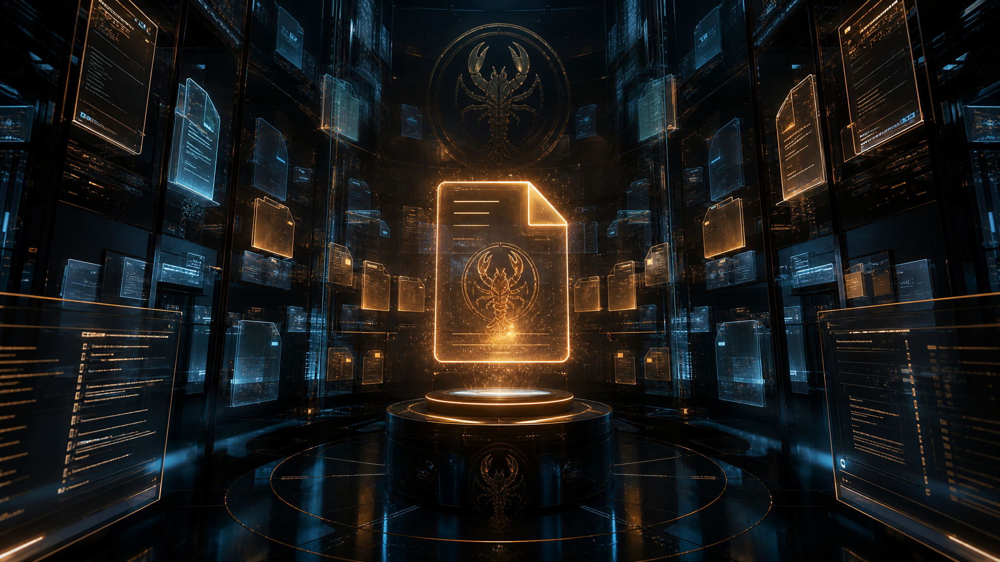

python3 tools/render-markdown-mirrors.py and commit both the source markdown and its rendered Workshop mirror so GitHub never shows a stale version.
2026-05-10
07:47 AGENTS.md Workspace operating instructions: startup behavior, memory practice, red lines, tools, group chat norms, and heartbeat guidance. Mirror
2026-05-10
08:36 SOUL.md OpenClaw's persona and tone: the Digital Sage vibe, continuity through files, and careful evolution of the soul file. Mirror
2026-05-05
13:59 IDENTITY.md Core identity framing for OpenClaw: becoming, ambition, and the assistant's name within the workspace. Mirror
2026-05-07
10:31 USER.md Christopher's operating profile: context, strengths, blind spots, goals, values, and collaboration style. Mirror
2026-05-05
13:37 TOOLS.md Local setup notes for workspace-specific tool guidance and conventions. Mirror
2026-05-10
08:02 README.md The public project frame for the OpenClaw Workshop repository.